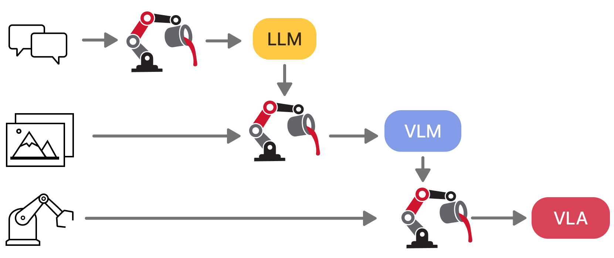
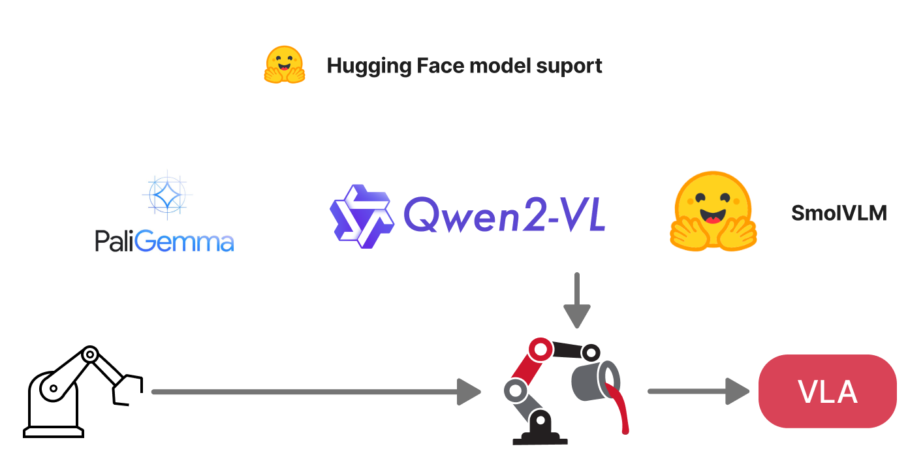
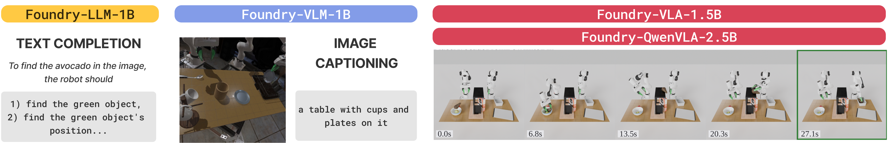

We present VLA Foundry, an open-source framework that unifies LLM, VLM, and VLA training in a single codebase. Most open-source VLA efforts specialize on the action training stage, often stitching together incompatible pretraining pipelines. VLA Foundry instead provides a shared training stack with end-to-end control, from language pretraining to action-expert fine-tuning. VLA Foundry supports both from-scratch training and pretrained backbones from Hugging Face. To demonstrate the utility of our framework, we train and release two families of models: the first trained fully from scratch through our LLM→VLM→VLA pipeline and the second built on the pretrained Qwen3-VL backbone. We evaluate closed-loop policy performance of both models on LBM Eval, an open-data, open-source simulator. We also contribute usability improvements to the simulator and the STEP analysis tools for easier public use. In the nominal evaluation setting, our fully-open from-scratch model is on par with our prior closed-source work and substituting in the Qwen3-VL backbone leads to a strong multi-task table top manipulation policy outperforming our baseline by a wide margin.


Train with text, image-captions, or robotics data. Go from LLM to VLM to VLA using the same framework.
Built on FSDP2 with WebDataset streaming. Multi-GPU training works locally with torchrun and on large clusters with AWS SageMaker.
Specify dataset sources and ratios at dataloader time for easy dataset mixing and batch balancing across modalities.
Pure PyTorch implementation with no heavy external libraries. Easy to modify, extend, and add new models or data pipelines.
Load pretrained weights from Hugging Face for LLMs, VLMs, CLIP models, and more. Use native or HF-backed implementations.
Self-registering models and batch handlers via decorators. Add new architectures without touching core code.

Example success and failure rollouts from our Foundry-QwenVLA-2.5B model evaluated in LBM Eval, a challenging open-source simulation benchmark.
@article{vlafoundrytri2026,
title={VLA Foundry: A Unified Framework for Training Vision-Language-Action Models},
author={Jean Mercat and Sedrick Keh and Kushal Arora and Paarth Shah and Isabella Huang and Haruki Nishimura and Shun Iwase and Katherine Liu},
year={2026},
}